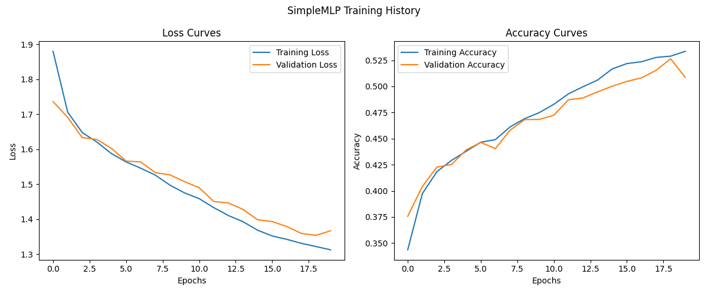
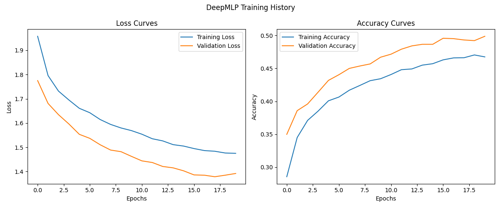
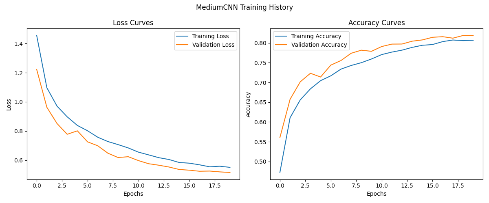
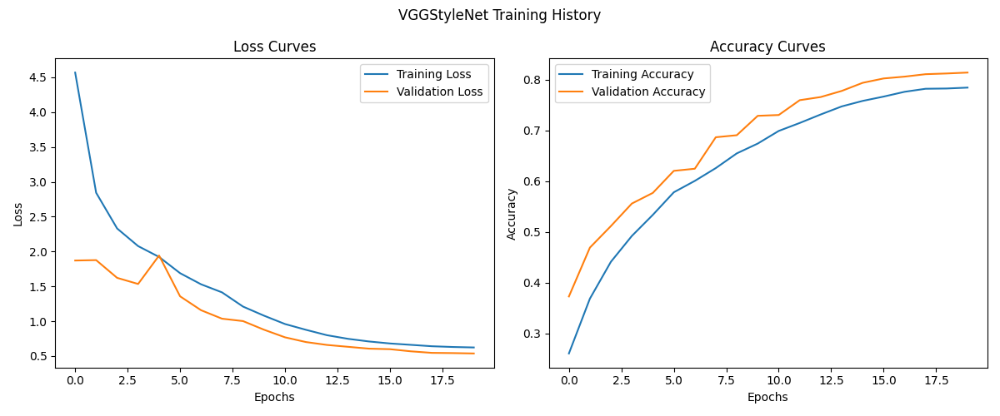
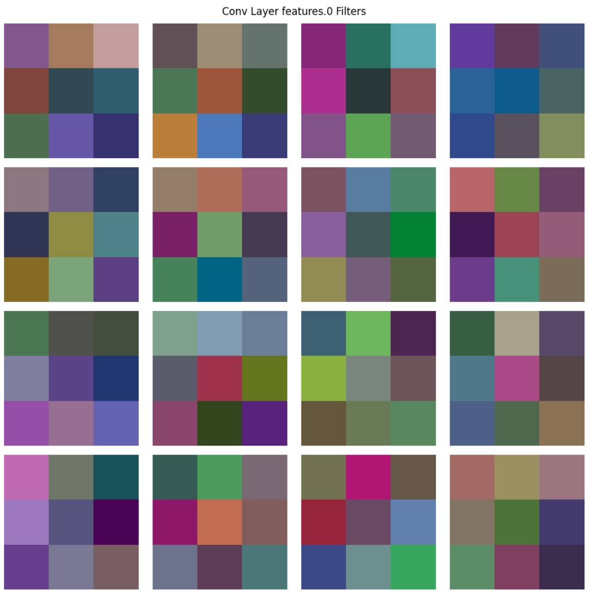
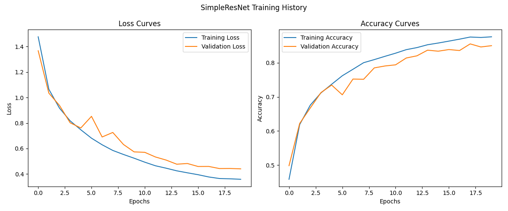
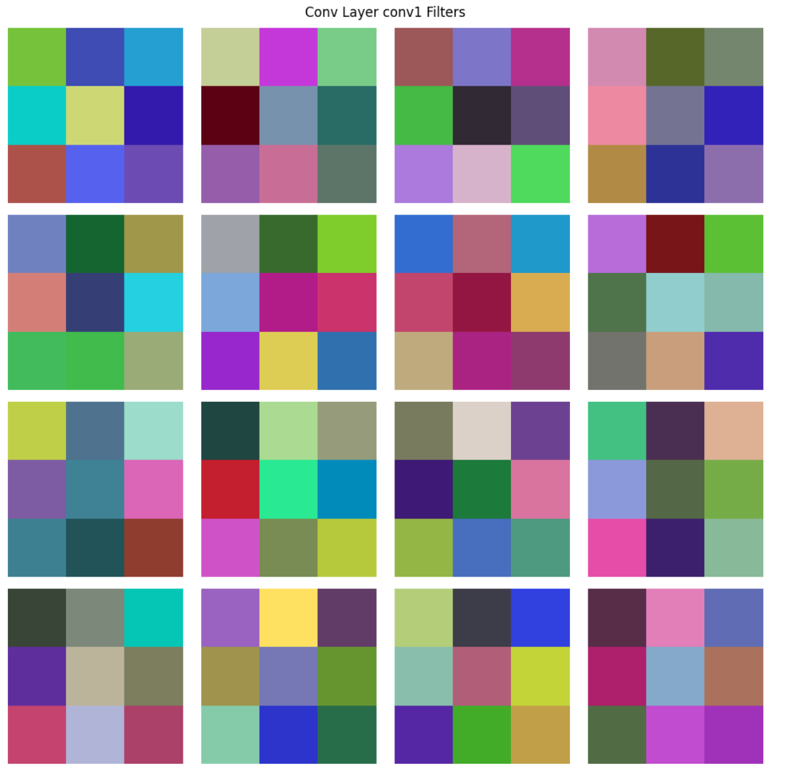

实验目的和背景介绍实验原理多层感知机(MLP)卷积神经网络(CNN)实验过程MLP了解MLP模型结构训练和评估MLP模型CNN了解CNN模型结构训练和评估CNN模型VGG和ResNetVGG风格和ResNet风格网络架构VGG架构特点ResNet架构及残差连接Bottleneck结构模型复杂度分析代码任务1:补充TwoLayerMLP代码任务2:修改 SimpleCNN 代码，添加一个额外的卷积层和BatchNorm实验结果和分析思考问题思考问题1：MLP在处理图像数据时面临哪些挑战？思考问题2：CNN相比MLP在处理图像时具有哪些优势？解释卷积操作如何保留图像的空间信息。思考问题3:分析Bottleneck结构的优势。为什么1×1卷积在深度CNN中如此重要？它如何帮助控制网络的参数量和计算复杂度？分析问题MLP分析问题1:训练SimpleMLP过程中，损失和准确率曲线表现如何？是否出现过拟合或欠拟合？简要分析可能的原因。分析问题2:对比SimpleMLP和DeepMLP的性能，增加网络深度对性能有何影响？CNN分析问题3:卷积核可视化显示了什么模式？这些模式与图像中的哪些特征可能对应？分析问题4: CNN模型相比MLP在CIFAR-10上的性能有何不同？为什么会有这样的差异VGG和ResNet分析问题5：创新探索任务迁移学习自监督学习结论和思考参考文献
实验目的和背景介绍
掌握MLP和CNN的基本原理和实现方法
了解不同网络结构对模型性能的影响
学习深度学习模型训练、评估和可视化的方法
通过对比实验，理解不同模型在图像分类任务中的优缺点
培养深度学习模型调优和问题解决的能力
本实验旨在通过对多层感知机（MLP）和卷积神经网络（CNN）的实现、训练和评估
实验原理
多层感知机(MLP)
多层感知机是一种前馈神经网络，由输入层、一个或多个隐藏层和输出层组成。 MLP的主要特点 是：
每层神经元与下一层全连接
使用非线性激活函数（如ReLU、Sigmoid等）
通过反向传播算法进行训练
思考问题1: MLP在处理图像数据时面临哪些挑战？请从数据结构、参数量和特征提取能力三个角 度分析。
卷积神经网络(CNN)
卷积神经网络是为处理具有网格状拓扑结构的数据而设计的神经网络，主要包含卷积层、池化层 和全连接层。CNN的主要特点是：
局部连接：每个神经元只与输入数据的一个局部区域连接
权重共享：同一特征图的所有神经元共享相同的权重
多层次特征提取：低层检测边缘等简单特征，高层组合这些特征形成更复杂的表示
思考问题2: CNN相比MLP在处理图像时具有哪些优势？解释卷积操作如何保留图像的空间信息。
实验过程
MLP
了解MLP模型结构
查看 models/mlp.py 文件，理解三种MLP模型的结构：
SimpleMLP : 单隐层MLP
DeepMLP: 多隐层MLP，带有BatchNorm和Dropout
ResidualMLP: 带有残差连接的MLP
任务1:补充TwoLayerMLP代码
训练和评估MLP模型
在 train.ipynb 中训练SimpleMLP模型，确保将 model_type 设置为 'simple_mlp ' 。
观察训练过程中的损失和准确率变化，以及最终在测试集上的性能。 分析问题1:训练过程中，损失和准确率曲线表现如何？是否出现过拟合或欠拟合？简要分析可能的原因。
修改参数尝试训练DeepMLP模型，将 model_type 设置为 'deep_mlp ' 。 分析问题2:对比SimpleMLP和DeepMLP的性能，增加网络深度对性能有何影响？
CNN
了解CNN模型结构
查看 models/cnn.py 文件，理解不同CNN模型的结构：
SimpleCNN : 简单的CNN，包含两个卷积层
MediumCNN : 中等复杂度的CNN，带有BatchNorm和Dropout
VGGStyleNet : VGG风格的CNN，使用连续的3x3卷积
SimpleResNet : 简化的ResNet，包含残差连接
任务2:修改 SimpleCNN 代码，添加一个额外的卷积层和BatchNorm
训练和评估CNN模型
在 train.ipynb中训练SimpleCNN模型，确保将 model_type 设置为 'simple_cnn ' ，并将 use_data_augmentation 设置为 True 。
观察训练过程和卷积核可视化结果。 分析问题3:卷积核可视化显示了什么模式？这些模式与图像中的哪些特征可能对应？
继续训练MediumCNN模型，将 model_type 设置为 'medium_cnn ' 。 分析问题4: CNN模型相比MLP在CIFAR-10上的性能有何不同？为什么会有这样的差异？
VGG和ResNet
VGG风格和ResNet风格网络架构
在本部分中，我们将探索两种影响深远的CNN架构：VGG和ResNet。通过理解这些经典架构的设 计理念和特点，可以帮助我们设计更高效的神经网络。
VGG架构特点
在 train.ipynb 中训练SimpleMLP模型，确保将 model_type 设置为 'vgg_style ' ，并将 use_data_augmentation 设置为 True 。
观察网络的训练过程和性能。特别注意其收敛速度和最终准确率。
ResNet架构及残差连接
在 train.ipynb 中训练SimpleMLP模型，确保将 model_type 设置为 'resnet ' ，并将 use_data_augmentation 设置为 True 。
观察网络的训练过程和性能，特别是深度对训练稳定性的影响。
Bottleneck结构
思考问题3:分析Bottleneck结构的优势。为什么1×1卷积在深度CNN中如此重要？它如何帮助控 制网络的参数量和计算复杂度？ 探索问题1: 查看 models/cnn.py 中的 SimpleResNet 实现，分析残差连接是如何实现的。如果输入 和输出通道数不匹配，代码是如何处理的？
模型复杂度分析
不同CNN架构在性能和效率之间存在权衡。现在我们将通过分析不同模型的参数量和推理时间来 理解这种权衡。
分析各个模型的复杂度
记录并比较各个模型的参数量和推理时间。 分析问题5: VGG风格和ResNet风格网络的性能比较。残差连接带来了哪些优势？ 分析问题6:参数量和推理时间如何影响模型的实用性？如何在性能和效率之间找到平衡？
代码
任务1:补充TwoLayerMLP代码
xclass TwoLayerMLP(nn.Module): def __init__(self, input_dim=3*32*32): super(TwoLayerMLP, self).__init__() self.flatten = nn.Flatten() #展平，把输入的多维数据展平为一维数据 # 使用nn.Linear, nn.BatchNorm1d, nn.ReLU和nn.Dropout实现两个隐藏层 self.mlp = nn.Sequential( # 第一个隐藏层 nn.Linear(input_dim, 128), nn.BatchNorm1d(128), nn.ReLU(), nn.Dropout(0.3), #第二个隐藏层 nn.Linear(128, 64), nn.BatchNorm1d(64), nn.ReLU(), nn.Dropout(0.3), nn.Linear(64, 10)#输出层 )
def forward(self, x): x = self.flatten(x) #展平，把输入的多维数据展平为一维数据 # 实现前向传播 x = self.mlp(x) return x
任务2:修改 SimpleCNN 代码，添加一个额外的卷积层和BatchNorm
xxxxxxxxxxclass EnhancedCNN(nn.Module): def __init__(self): super(EnhancedCNN, self).__init__() self.conv1 = nn.Conv2d(3, 16, kernel_size=3, padding=1) # 输入3通道，输出16通道的卷积层 self.conv2 = nn.Conv2d(16, 32, kernel_size=3, padding=1) # 输入16通道，输出32通道的卷积层 # 在这里添加一个新的卷积层、BatchNorm和相应的池化层 self.conv3 = nn.Conv2d(32, 64, kernel_size=3, padding=1)# 输入32通道，输出64通道的卷积层 self.bn3 = nn.BatchNorm2d(64)# 标准化层
self.pool = nn.MaxPool2d(2, 2) # 池化层 self.flatten = nn.Flatten()# 展平层 # 修改全连接层以适应新的特征图尺寸 self.fc1 = nn.Linear(64 * 4 * 4, 128) self.fc2 = nn.Linear(128, 10)# 输出层
self.relu = nn.ReLU() def forward(self, x): # 实现包含新卷积层的前向传播 x = self.pool(self.relu(self.conv1(x)))# 输出大小: 16x16x16 x = self.pool(self.relu(self.conv2(x)))# 输出大小: 8x8x32 x = self.pool(self.relu(self.bn3(self.conv3(x))))# 输出大小: 4x4x64 x = self.flatten(x)# 展平 x = self.relu(self.fc1(x)) # 全连接层 x = self.fc2(x)# 输出层 return x
实验结果和分析
思考问题
思考问题1：MLP在处理图像数据时面临哪些挑战？
答：
数据结构层面：图像数据是二维的，像素间的关系包含空间信息。MLP接受一维向量输入，如果把输入图像展平为一维向量（例如，
3x28x28的图像变为2352维向量），将会导致空间信息丢失。参数量层面：图像具有的像素点很多，且有多个通道。如果处理
224x224的RGB图像输入维度为150528，假设第一隐藏层有1024个神经元，则仅第一层就需要1.5亿参数（150528x1024），如此大的计算开销难以接受特征提取能力层面：图像的特征通常是层次化的（低级特征→边缘→纹理→物体部件→整体物体），而MLP的全局全连接结构难以高效提取这种层次特征。
思考问题2：CNN相比MLP在处理图像时具有哪些优势？解释卷积操作如何保留图像的空间信息。
答：
CNN的优势：卷积神经网络（CNN）相比多层感知机（MLP）在处理图像数据时具有显著优势，主要体现在其能够有效保留空间信息并大幅减少参数量。CNN通过卷积操作在局部感受野上滑动计算，使每个卷积核仅关注图像的相邻像素（如3×3或5×5区域），从而捕捉边缘、纹理等局部特征，同时保持输出特征图的空间结构。这种局部感知机制和权重共享（同一卷积核在整个图像上复用）不仅增强了模型对平移、旋转等几何变换的鲁棒性，还极大降低了参数量——例如，一个3×3卷积核仅需9个参数，而MLP在处理高分辨率图像时需要数百万甚至数十亿的全连接参数。此外，CNN的层次化结构（如堆叠的卷积层和池化层）能自动学习从低级到高级的视觉特征（如边缘→纹理→物体部件→完整物体），而MLP由于缺乏空间归纳偏置，难以高效提取此类层次化特征。因此，CNN在图像分类、目标检测等任务中表现更优。
卷积操作：卷积操作通过局部连接、权重共享和平移不变性有效保留了图像的空间信息。卷积核（如3×3或5×5）以滑动窗口的方式在图像上局部计算，每个输出像素仅对应输入图像的特定小区域（感受野），从而维持了像素间的空间关系。这种局部感知机制使卷积能够直接捕捉边缘、纹理等空间特征，而不像MLP那样破坏图像结构。同时，权重共享让同一个卷积核在整个图像上重复使用，不仅大幅减少参数量，还保证了模型对图像不同位置出现的相同模式（如猫耳朵）具有一致的响应，即平移不变性。最终输出的特征图仍保持二维结构，使得后续网络层能继续处理空间信息，这是CNN在图像任务上优于MLP的关键原因。
思考问题3:分析Bottleneck结构的优势。为什么1×1卷积在深度CNN中如此重要？它如何帮助控制网络的参数量和计算复杂度？
答：Bottleneck通过1×1卷积实现“先压缩后扩展”，在保持网络性能的前提下显著减少计算资源消耗。在残差网络中，Bottleneck结构允许梯度直接通过1×1卷积的快捷路径传播，缓解了深度网络的梯度消失问题，同时避免了直接对高维特征进行3×3卷积的高成本操作。这种设计通过减少中间特征图的通道数（如从256维压缩到64维），大幅降低后续3×3卷积的计算量，再通过1×1卷积恢复原始通道数。
分析问题
Warning
所有以下实验均在本地运行，所有device使用cuda，使用一块4080 laptop。因为是自己的电脑，所以运行环境不一定完全稳定，性能上可能有一定偏差。
未避免实验报告过于繁杂，未包含混淆矩阵，分类表格等结果的可视化，仅保留了训练曲线。
MLP
SimpleMLP训练曲线：

SimpleMLP最终测试准确率：0.5114
DeepMLP训练曲线：

DeepMLP最终测试准确率：0.5284
分析问题1:训练SimpleMLP过程中，损失和准确率曲线表现如何？是否出现过拟合或欠拟合？简要分析可能的原因。
是正常的训练表现，并且训练集和验证集表现相似，没有过拟合问题。但是训练和验证集的准确率均不高，最终测试准确率也只有0.5114，有欠拟合的问题。这主要是因为MLP处理图像数据无法捕捉空间特征，加上simpleMLP本身参数较少，结构简单，无法很好地拟合数据集。
分析问题2:对比SimpleMLP和DeepMLP的性能，增加网络深度对性能有何影响？
观察DeepMLP训练曲线。增加深度后模型的训练表现并没有增加，反而有一定下降。最终测试准确率为0.5284，几乎没有提升。
模型性能对比：
SimpleMLP：参数量: 1,578,506 每批次(128个样本)推理时间: 0.07ms 训练总时间：224s
DeepMLP: 参数量: 3,809,034 每批次(128个样本)推理时间: 0.25ms 训练总时间：801s
两者推理时间均不长，但是deepmlp明显数倍于simplemlp。故增加网络深度会增加推理速度，同理，训练时间也会增加。
CNN
SimpleCNN：
训练曲线：

测试准确率: 0.7204
卷积核可视化：

MediumCNN：
训练曲线： 
测试准确率: 0.8356
卷积可视化：

分析问题3:卷积核可视化显示了什么模式？这些模式与图像中的哪些特征可能对应？
卷积核可视化显示了每个卷积核中的权重都有区别，这表明卷积核提取了感受野中的不同特征。某些卷积核可能专注于检测特定方向的边缘（如水平、垂直或对角线）。一些卷积核可能对特定颜色或颜色组合敏感，帮助模型识别图像中的颜色模式。卷积核也可能学习到简单的纹理特征，如条纹或网格状结构。
分析问题4: CNN模型相比MLP在CIFAR-10上的性能有何不同？为什么会有这样的差异
在CIFAR-10数据集上，CNN表现明显优于MLP，因为CNN能够有效利用图像的空间结构。卷积层通过局部连接和共享权重捕捉图像中的模式，使得模型在参数数量较少的情况下高效学习特征。此外，CNN通过多层卷积和池化层逐步提取从低级到高级的特征，能够关注局部区域并捕捉局部细节。相比之下，MLP通常将输入数据扁平化处理，忽略了图像的二维结构，且需要更多参数，这容易导致过拟合。因此，CNN在图像分类任务中具有显著优势。
VGG和ResNet
VGG：
训练曲线： 
测试准确率: 0.7204
卷积核可视化： 
ResNet：
训练曲线： 
测试准确率: 0.7204
卷积核可视化： 
复杂度对比：
分析问题5：
创新探索任务
迁移学习
自监督学习
自监督学习指通过数据本身自动生成标签（或称“伪标签”）来训练模型，而无需依赖人工标注的数据。这一过程需要大量的数据和训练。
本实验中采用的数据还是cifar-10，输出从已知的标签改成了自己生成的旋转角度。每个图片随机旋转0 ,90, 180, 270°，生成对应的标签。我们的自监督任务是预测旋转角度。
采用simpleCNN作为backbone，把最后的fc2层的输出维度改成了4。在训练过后，理论上backbone输出的128维向量包含了图片信息，在此基础上微调应该能获得比单纯的simpleCNN训练更好的效果。因为微调是另一个bonus了，所以这里就没实现，只实现了自监督学习的部分。
结论和思考